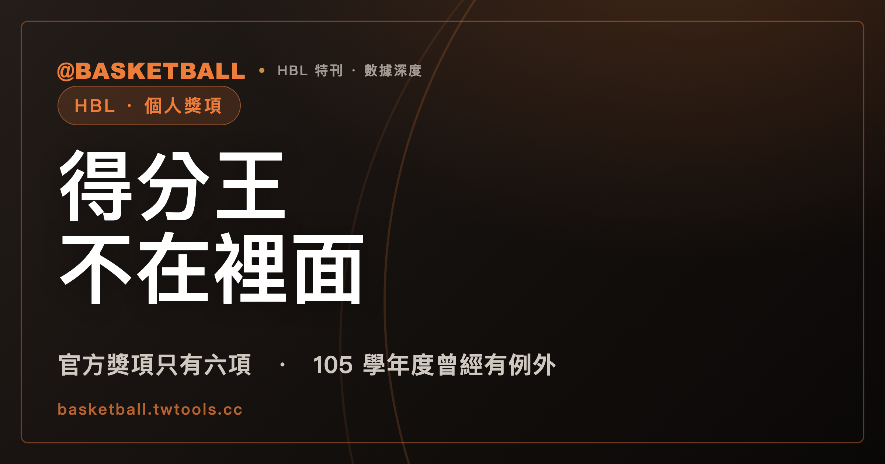

得分王不在裡面：114 學年度 HBL 官方個人獎項只有六項
114 學年度 HBL 官方個人獎項固定只有六項：MVP、新人王、籃板王、助攻王、阻攻王、抄截王，女生組對應為后。球迷常說的得分王不在這六項之中——但把這句話講成「HBL 從來沒有得分王」就錯了，105 學年度的報導就曾經把得分王寫進頒獎典禮名單。

新手村｜HBL・六大個人獎項
第一次看 HBL 個人獎項的報導，容易把得分王、籃板王、助攻王這些說法全部當成同一個等級的官方頭銜。打開官方頁面核對一次就會發現，官方認定的獎項只有六種，得分王不在裡面。這篇文章用官方頁面跟媒體報導對照，拆開「官方六項」跟「媒體自己統計的說法」，再用一個舊學年度的反例，說明這句話為什麼只能講到現行學年度為止。
讀完之後，你應該能做一件事：看到任何一篇 HBL 獎項相關的報導，先問自己兩個問題——它講的是官方歷年獎項表格上的六個欄位之一，還是另一種數據排行？它講的是哪個學年度？這篇文章會把這兩個問題拆給你看。
官方歷年獎項表格只有六個欄位
hbl.com.tw/reward-history 是官方公布歷年得獎名單的頁面。114 學年度存取時，男生組的表格欄位固定是：MVP、新人王、籃板王、助攻王、阻攻王、抄截王，一共六項，欄位裡沒有得分王。
| 官方欄位（男生組） | 依 114 學年度媒體報導的女生組對應稱呼 |
|---|---|
| MVP | MVP（媒體報導常稱總決賽 MVP 或 FMVP） |
| 新人王 | 新人后 |
| 籃板王 | 籃板后 |
| 助攻王 | 助攻后 |
| 阻攻王 | 阻攻后 |
| 抄截王 | 抄截后 |
女生組的六個稱呼，官方頁面本身另有頁籤，但這篇文章沒有直接擷取女生組頁籤的原始畫面，上面的對應稱呼是依 114 學年度兩篇媒體報導轉述，不是官方頁面逐字截圖等級的一手引用。
要注意的是，官方頁面只列出六個欄位的得獎名單，沒有附上每個欄位是怎麼選出來的。這件事後面會再展開。
114 學年度當屆頒獎典禮，兩家媒體報導的獎項類別跟官方表格一致
2026 年 3 月 22 日，ETtoday 運動雲與 NOWnews 今日新聞各自發布 114 學年度個人獎項的完整名單報導，兩篇報導同一天刊出，彼此獨立。報導列出的獎項類別是：籃板王、籃板后、抄截王、抄截后、助攻王、助攻后、阻攻王、阻攻后、新人王、新人后，加上男子組與女子組的總決賽 MVP（兩篇報導都用「FMVP」這個說法稱呼它）。
把這份清單拿去跟官方歷年獎項表格的六個欄位對照，結構是一致的：都是六個類別，男生組、女生組各自對應，都沒有出現得分王這一項。兩篇報導各自獨立成稿，卻在獎項類別的結構上完全對得上官方表格，這也是這篇文章判斷「114 學年度官方獎項固定六項」時所依據的第二重來源，不只靠官方頁面單一來源。
這裡有一個用詞上的小差異：官方表格欄位標題寫的是「MVP」，兩篇媒體報導則用「FMVP」或「總決賽 MVP」來稱呼這個獎項。兩者指的應該是同一個獎項，只是正式欄位名稱跟媒體慣用簡稱不完全一樣，讀到「FMVP」時，可以理解成官方 MVP 欄位的媒體別名，不必當成另外一個獎項。
得分王沒有官方定義，105 學年度報導卻寫進了頒獎典禮名單
「得分王」這個說法沒有查到官方的一手定義。114 學年度官方歷年獎項頁面公布的六個欄位裡沒有它，114 學年度當屆的兩篇媒體報導也沒有把它列進獎項清單——單看 114 學年度這一屆，得分王不在官方頒獎典禮的六個項目之中；至於 114 學年度的媒體是否仍用這個說法整理球季數據排行，這篇沒有查到當屆的用例，不確定。
但如果把時間往回拉，這句話就沒辦法講得那麼絕對。105 學年度（2017 年）自由體育的一篇賽後報導，逐字寫著：「而大會最後進行頒獎典禮，男子組得分王由高國豪拿下，籃板王則是泰山高中的譚傑龍，助攻王則是能仁高中的谷毛維嘉。」這句話把得分王跟籃板王、助攻王寫成同一場頒獎典禮裡並列的項目，不是另外分開報的數據排行。
同一篇報導底下，還附了一張「個人獎項一覽表」，列出五個項目跟對應數字：
| 獎項 | 105 學年度得主（依報導） | 數字 |
|---|---|---|
| 得分王 | 高國豪 | 22.6 |
| 籃板王 | 譚傑龍 | 14 |
| 助攻王 | 谷毛唯嘉 | 4.6 |
| 抄截王 | 王偉丞 | 4.22 |
| 阻攻王 | 吳沛嘉 | 2.2 |
這張表沒有單獨列 MVP，MVP 在同一篇報導裡是另外用文字敘述的。但光看這張表，得分王跟籃板王、助攻王、抄截王、阻攻王是放在同一個層級呈現的，看起來就是當屆頒獎典禮的一部分，不是報導另外加碼統計的數據排行。
這代表「得分王從來不是 HBL 官方獎項」這句話，對 105 學年度是不成立的，至少從報導的寫法看不出得分王跟其他四個獎項有什麼不同待遇。這篇文章查到的資料只能支持「114 學年度官方歷年獎項與當屆報導都是六項、不含得分王」，沒辦法往回推論成「HBL 史上從來沒有得分王這個獎項」。下次聽到有人說「HBL 沒有得分王」，可以先問一句：講的是哪個學年度？
官方規程全文，沒有寫獎項怎麼選
114 學年度高級中等學校籃球聯賽競賽規程（修正版）第 1 條到第 23 條全文查過一遍，沒有看到 MVP、新人王這些個人獎項的定義或評選辦法條文。規程本文處理的是參賽資格、賽制這類事，個人獎項另外只出現在 hbl.com.tw/reward-history 的得獎名單頁面，那個頁面同樣只公布得獎人是誰，不附評選標準、評審組成、或計票方式。
MVP 是不是只有總冠軍戰才頒、有沒有例行賽 MVP、六個獎項各自怎麼從全體球員裡選出來，這些問題查了規程跟官方頁面都沒有答案，也沒查到任何一篇報導把評選辦法寫成條文。這件事目前查無，不代表答案是「沒有標準」，只是官方沒有公開條文化的說明，遇到這類問題與其自己猜，不如直接留白。
「新人王」的資格定義也是同樣情況。114 學年度的新人王、新人后得主剛好都是高一生，但這只是那一屆得獎者的背景描述，官方沒有公開「新人王限定高一生」這種明文規則。看到某一屆的新人王是高一生，不能反推成「新人王只能是高一生」，這是個案，不是規則。
官方歷年名單看得出來：獎項固定，得主不是每年都有
hbl.com.tw/reward-history 收錄的歷年獎項表格往回可以查到至少 106 學年度到 113 學年度的紀錄。拿 108 學年度到 113 學年度男生組的幾列來看：
| 學年度 | MVP | 籃板王 | 助攻王 |
|---|---|---|---|
| 113 | 松山高中 劉程恩 | 能仁家商 傅雋堯 | 南湖高中 周佑承 |
| 111 | 光復高中 謝銘駿 | 泰山高中 張祐瑋 | 能仁家商 林明暐 |
| 109 | 泰山高中 徐宏瑋 | 松山高中 喬納森 | 泰山高中 張東庭 |
這幾列說明的重點不是誰得過獎，而是「MVP、籃板王、助攻王」這幾個類別本身，年年都在官方表格裡固定出現，是制度性的欄位，不是某一屆才有的臨時安排。
但固定的欄位不代表每年都有人拿。106 學年度男生組的表格裡，新人王那一格寫的是「（缺）」，其他五項都有得主。這是一手的表格紀錄，可以直接說明：六個獎項欄位是固定的，但欄位有得主填進去，跟欄位本身存在，是兩件不同的事——某一屆某個獎項沒有人拿，官方表格上就會留白，不代表那個獎項從此消失。
下次翻開官方歷年獎項頁面，可以自己核對一次：眼前這一屆，六個欄位是不是都填滿了，有沒有哪一格是空的。想知道 114 學年度這一屆賽季怎麼打、冠軍隊伍是誰，可以看本站的 HBL 完整指南，這篇文章處理的是制度本身，不涉及任何一屆的比賽結果。
常見問題
114 學年度 HBL 官方個人獎項一共有幾項？
男生組六項：MVP、新人王、籃板王、助攻王、阻攻王、抄截王，依 114 學年度存取的 hbl.com.tw/reward-history 官方表格欄位；女生組依 114 學年度兩篇媒體報導，對應為新人后、籃板后、助攻后、阻攻后、抄截后，加上女子組 MVP，同樣六項。女生組稱呼目前只有媒體報導佐證，不是官方頁面逐字截圖等級的一手來源。
得分王是不是 HBL 官方獎項？
114 學年度不是。114 學年度官方歷年獎項表格與當屆的兩篇媒體報導都沒有把得分王列進去。但 105 學年度（2017 年）的賽後報導，曾經把得分王跟籃板王、助攻王寫成同一場頒獎典禮的項目，所以「得分王從來不是 HBL 官方獎項」這句話不能講成整個歷史都成立，只能限定在 114 學年度現行制度下。
MVP、新人王這些獎項，有沒有公開的評選標準？
查無。114 學年度競賽規程（修正版）第 1 條到第 23 條全文，以及官方歷年獎項頁面，都沒有公布評選辦法或評審組成，屬於官方未公開條文化說明的情況，不代表沒有標準，只是查不到，不臆測。
新人王是不是限定高一生才能拿？
官方沒有查到明文規定。114 學年度的新人王、新人后得主剛好都是高一生，但這是那一屆得獎者的背景描述，不是官方公告的資格規則，不能反過來當成「新人王只能給高一生」的定義。
資料來源
- HBL 官方歷年獎項頁面（114 學年度存取，2026 年 9 月 27 日抓取）：hbl.com.tw/reward-history
- 114 學年度高級中等學校籃球聯賽競賽規程（修正版），依據運動部 114 年 10 月 1 日函暨 114 年 11 月 18 日函核定（2026 年 9 月 27 日抓取）：hbl.com.tw/rule
- ETtoday 運動雲，記者蔡厚瑄，2026 年 3 月 22 日 23:04 發布：sports.ettoday.net/news/3136733
- NOWnews 今日新聞，記者陳昱慈，2026 年 3 月 22 日發布：www.nownews.com/news/6798812
- 自由體育，〔體育中心／綜合報導〕，2017 年 3 月 5 日 22:33 發布：sports.ltn.com.tw/news/breakingnews/1994376